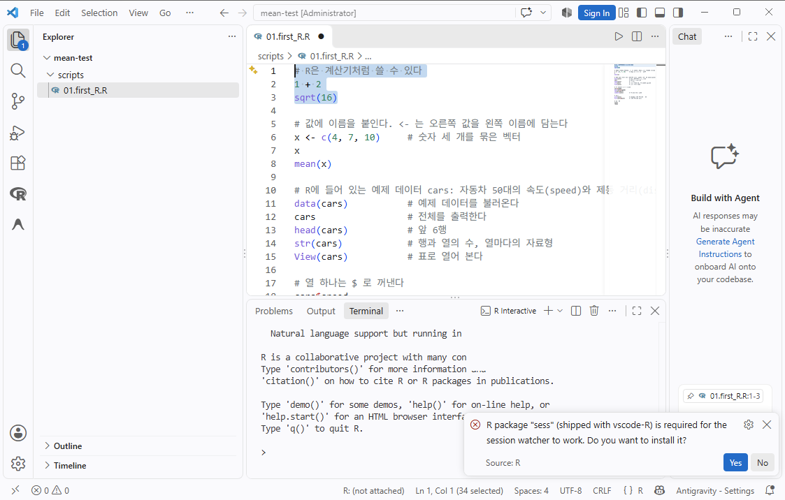
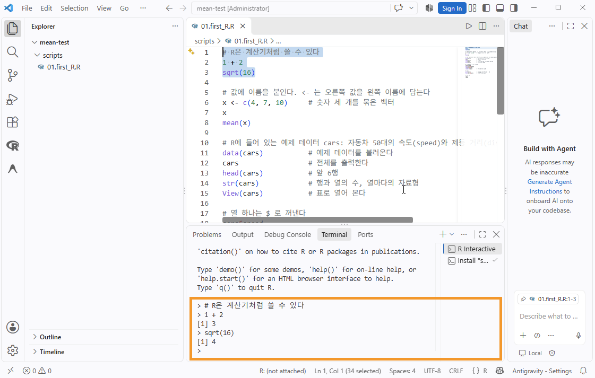

노트북에서 R 스크립트로
VS Code에서 Jupyter 노트북으로 R을 써 왔다면 R과 VS Code는 이미 설치되어 있다. 여기서부터는 노트북을 쓰지 않는다. R 코드는 .R 스크립트 파일에 두고, 코딩 에이전트가 터미널에서 그 스크립트를 실행해 결과를 보여 준다. 이 문서는 그렇게 바꾸는 데 필요한 것만 다룬다.
- 읽을 사람
- VS Code에서 R 커널(IRkernel)을 연결해
.ipynb노트북으로 R을 써 본 사람. 예: 세상읽기 1장을 따라 한 사람. R을 처음 설치한다면 이 문서 대신 VS Code에서 R 실행하기를 따른다. - 더 할 것
- 터미널에서 R을 찾는지 확인,
languageserver패키지와 R 확장(REditorSupport) 설치, 작업폴더 만들기. - 지우지 않아도 되는 것
- Python, uv, Jupyter 확장, R 커널. 앞으로 쓰지 않더라도 남겨 두어도 방해가 되지 않는다.
- 패키지
- 분석에 쓰는 패키지는 자료마다 다르다. 이 문서에서는 연결에 필요한
languageserver만 설치하고, 나머지는 각 자료의 안내에 따라 설치한다.
무엇이 달라지나
노트북에서는 내가 셀을 하나씩 실행하고, 결과가 셀 바로 아래에 붙었다. 이제부터는 에이전트가 스크립트 파일을 쓰고 고친 다음 터미널에서 Rscript로 파일 전체를 실행한다. 나는 바뀐 코드와 실행 결과를 읽고 확인한다.
| 하는 일 | 노트북에서 | 이제부터 |
|---|---|---|
| 코드를 두는 곳 | notebooks/의 .ipynb 셀 | scripts/의 .R 파일 |
| 실행하는 사람 | 내가 셀마다 Shift+Enter | 에이전트가 터미널에서 Rscript scripts/파일.R |
| R을 고르는 곳 | 노트북 오른쪽 위 Select Kernel → R | 고를 것이 없다. 터미널이 R을 찾을 수 있으면 된다 |
| 앞에서 만든 데이터 | 커널이 켜져 있는 동안 기억한다 | 실행할 때마다 R이 새로 시작한다. 스크립트가 처음부터 다시 읽고 만든다 |
| 처음부터 다시 실행 | 커널 재시작 → 모든 셀 실행 | 매번 그렇게 된다. 따로 할 일이 없다 |
| 결과를 보는 곳 | 셀 아래 출력 | 에이전트 창에 보여 주는 터미널 출력 |
| 그림 | 셀 아래에 바로 그려진다 | output/에 PNG 파일로 저장하고, VS Code 탐색기에서 연다 |
| 표로 데이터 보기 | 셀에 데이터 이름을 적으면 표가 나온다 | 앞 몇 줄과 열 구조를 출력하게 한다 |
| 파일 경로의 기준 | 노트북이 있는 notebooks/ | 프로젝트 루트. "dataset/raw/파일.csv"처럼 적는다 |
가장 큰 차이는 "기억하지 않는다"는 것이다. 노트북은 앞 셀에서 만든 데이터를 커널이 들고 있어서, 중간 셀만 고쳐 다시 실행해도 됐다. Rscript는 실행이 끝나면 R을 닫는다. 그래서 스크립트는 맨 앞에서 패키지를 불러오고 데이터를 읽는 것부터 끝까지 혼자 돌아가야 한다. 대신 셀 실행 순서가 꼬여서 생기는 오류는 없다. 어제 돌아간 스크립트는 오늘도 같은 결과를 낸다.
노트북에서 "../dataset/raw/..."처럼 앞에 ../를 붙였다면 이제는 붙이지 않는다. Rscript를 프로젝트 루트에서 실행하므로 R의 작업 폴더가 루트이고, 스크립트가 scripts/ 안에 있어도 경로는 루트를 기준으로 적는다.
VS Code와 R 연결하기
노트북을 쓸 때는 Jupyter 확장과 R 커널이 VS Code와 R 사이를 이어 주었다. 스크립트를 쓸 때는 그 일을 R 확장과 languageserver 패키지가 맡는다. 노트북으로 R을 써 왔다면 아래 표의 위쪽은 끝나 있고, 아래쪽 세 줄만 하면 된다.
| 항목 | 상태 | 할 일 |
|---|---|---|
| R | 설치됨 | 없음 |
| VS Code | 설치됨 | 없음 |
| 코딩 에이전트 | 쓰던 것 | 터미널 명령을 실행할 수 있는 에이전트면 그대로 쓴다. 없다면 Google Antigravity 확장을 설치한다 |
| Windows: 터미널에서 R 찾기(PATH) | 해 두었을 수도, 아닐 수도 있다 | 꼭 필요하다. 아래 1번으로 확인한다 |
languageserver 패키지 | 없음 | 아래 2번 |
| R 확장(REditorSupport) | 없음 | 아래 3번 |
- 터미널에서 R을 찾는지 확인한다. 에이전트는 VS Code의 터미널에서
Rscript를 실행한다. 그래서 터미널이 R을 찾지 못하면 에이전트도 스크립트를 실행하지 못한다. 노트북에서는 R 커널이 R을 대신 찾아 주었으므로, 지금까지는 이 설정 없이도 문제가 없었을 수 있다. VS Code에서 터미널을 열고(Ctrl+Shift+`) 아래 명령을 입력한다. 버전이 나오면 된다.터미널 · Windows (PowerShell)Rscript.exe --version
터미널 · macOSWindows에서 "인식되지 않는 명령"이라는 오류가 나면 Windows: 터미널에서 R.exe를 바로 실행하게 하기를 따라 PATH를 설정하고 VS Code를 다시 연다. macOS는 R을 설치할 때 함께 등록된다.Rscript --version
languageserver를 설치한다.languageserver는 VS Code가 R 코드를 읽고 자동완성, 함수 도움말, 문법 오류 표시를 띄우는 데 쓰는 R 패키지다. 터미널에서 R을 시작하고(Windows는R.exe, macOS는R),>표시가 나오면 아래를 붙여 넣는다. 설치가 끝나면q()를 입력해 R을 끝낸다. 작업 공간을 저장할지 물으면n을 누른다.R · 처음 한 번만install.packages( "languageserver", repos = "https://cloud.r-project.org/", type = "binary" )
type = "binary"는 운영체제에 맞게 미리 만들어 둔 설치 파일만 받으라는 뜻이다. 적는 이유는 패키지 설치의 설명을 본다. macOS에서 설치 끝에R_X11.so경고가 나오면 무시해도 된다.- R 확장을 설치한다. 확장(Extensions) 화면에서
R을 검색해 게시자가REditorSupport인 확장을 설치한다. 화면은 R 확장 설치에 있다. Python이나 Jupyter 확장과 함께 설치되어 있어도 서로 부딪치지 않는다. 설치한 뒤 VS Code를 다시 열고.R파일을 열어, 함수 이름에 마우스를 올렸을 때 도움말이 뜨면 연결된 것이다.
작업폴더
스크립트로 작업할 폴더를 새로 만든다. 노트북과 스크립트가 한 폴더에 섞이지 않게 하려는 것이다.
- 폴더를 만들고 연다. 스크립트와 데이터를 둘 폴더를 하나 만들고 VS Code에서 파일(File) → 폴더 열기(Open Folder)로 연다. 이 문서에서는 이 폴더를
작업폴더라고 부른다. 실제 폴더 이름은 영문으로 짓고, 폴더 경로에 한글이나 공백이 없게 한다. 파일 하나가 아니라 폴더를 연다. - 폴더 구조를 만든다. 탐색기에서 직접 만들어도 되고, 에이전트에게 맡겨도 된다.
프롬프트 · 폴더 만들기
이 폴더 안에 scripts, dataset/raw, dataset/working, output 폴더를 만들어 줘. 이미 있는 폴더는 그대로 둔다.
작업폴더/ 프로젝트 루트. VS Code에서 여는 폴더이자 R의 작업 폴더 ├─ scripts/ R 스크립트. 에이전트가 여기서 쓰고 실행한다 ├─ dataset/ │ ├─ raw/ 받은 원본 파일. 읽기만 한다 │ └─ working/ 다듬은 데이터. 코드로만 만든다 └─ output/ 그림 파일
직접 실행해 보기
에이전트에게 맡기기 전에 02절에서 설치한 R 확장으로 직접 실행해 본다. 노트북에서 셀을 실행하던 일은 스크립트에서는 줄을 골라 R 터미널로 보내는 일이 된다. 이 R 터미널은 노트북의 커널처럼 켜져 있는 동안 앞에서 만든 데이터를 기억한다.
| 하는 일 | Windows | macOS | 노트북에서는 |
|---|---|---|---|
| 현재 줄·선택한 줄 실행 | Ctrl+Enter | ⌘+Enter | 셀 실행 |
| 파일 전체 실행 | Ctrl+Shift+S | ⌘+Shift+S | 모든 셀 실행 |
| R 터미널 새로 열기 | R 터미널에서 q()로 끝낸 뒤 다시 실행한다. 명령 팔레트(Ctrl/⌘+Shift+P)의 R: Create R terminal로 열어도 된다 | 커널 재시작 | |
현재 줄과 선택한 줄 실행: Ctrl+Enter
- 스크립트를 만든다. 탐색기에서
scripts폴더를 마우스 오른쪽 버튼으로 누르고 새 파일(New File...)을 골라01.first_R.R을 만든다. 확장자가.R이어야 R 파일로 인식한다. 아래 코드를 복사해 붙여 넣는다.#뒤는 실행되지 않는 설명(주석)이다.R · scripts/01.first_R.R# R은 계산기처럼 쓸 수 있다 1 + 2 sqrt(16) # 값에 이름을 붙인다. <- 는 오른쪽 값을 왼쪽 이름에 담는다 x <- c(4, 7, 10) # 숫자 세 개를 묶은 벡터 x mean(x) # R에 들어 있는 예제 데이터 cars: 자동차 50대의 속도(speed)와 제동 거리(dist) head(cars) # 앞 6행 plot(cars) # 점 그림
- 세 줄을 골라 실행한다. 1~3번 줄을 마우스로 끌어 선택하고 Ctrl+Enter(macOS는 ⌘+Enter)를 누른다. 아래쪽 패널에 R Interactive라는 R 터미널이 열린다.
- 처음이면
sess를 설치한다. R 코드를 처음 실행하면 오른쪽 아래에 아래와 같은 알림이 나온다. Yes를 누른다.R package "sess" (shipped with vscode-R) is required for the session watcher to work. Do you want to install it?
처음 실행하면 오른쪽 아래에 sess설치를 묻는 알림이 나온다. Yes를 누른다. 그림의 폴더 이름(mean-test)은 다른 실습에서 찍은 것이다.sess는 R 확장이 R 터미널을 지켜보다가 그림과 표를 VS Code 안에 띄울 때 쓰는 패키지다. R 확장 안에 함께 들어 있어서, Yes를 누르면 그것을 내 R에 설치한다. 한 번 설치하면 다시 묻지 않는다. - R 터미널을 새로 열고 다시 실행한다. 알림이 나왔을 때 열려 있던 R 터미널은
sess를 설치하기 전에 시작된 것이어서 VS Code와 연결되지 않은 채로 남는다. 터미널 패널 오른쪽 목록의 R Interactive를 휴지통 아이콘으로 닫거나q()를 입력해 끝낸 다음, 1~3번 줄을 골라 Ctrl+Enter를 다시 누른다. 선택한 줄이 R 터미널로 보내지고, 줄마다 결과가 바로 아래에 나온다.
선택한 줄이 아래쪽 R 터미널로 보내져 실행되고, 줄마다 결과가 바로 아래에 나온다. - 한 줄씩 내려가며 실행한다. 아무것도 선택하지 않고 Ctrl+Enter를 누르면 커서가 있는 줄이 실행되고 커서가 다음 줄로 내려간다. 5번 줄에 커서를 두고 계속 누르면 끝까지 한 줄씩 실행된다.
mean(x)에서[1] 7이 나오고,head(cars)에서 6행짜리 표가 나온다. - 그림이 VS Code 안에 열리는지 본다.
plot(cars)를 실행하면 편집기 옆에 그림 탭이 열린다. 맨 아래 상태 표시줄에R: (not attached)가 보이면 R 터미널이 아직 R 확장과 연결되지 않은 것이다. 4번처럼 R 터미널을 한 번 더 새로 연다.
파일 전체 실행: Ctrl+Shift+S
편집기에서 Ctrl+Shift+S(macOS는 ⌘+Shift+S)를 누르면 지금 열린 파일 전체가 실행된다. 01.first_R.R에서 눌러 보면 R 터미널에는 아래 한 줄만 나오고, 그림만 다시 그려진다.
> source(".../scripts/01.first_R.R", encoding = "UTF-8")파일 전체 실행에서는 줄마다의 결과가 나오지 않는다. 이 단축키는 파일을 한꺼번에 읽어 실행하는 source()를 R 터미널에 보낸다. source()로 실행하면 1 + 2나 mean(x)처럼 값만 적은 줄은 계산은 되지만 화면에 출력되지 않는다. 결과를 보이게 하려면 스크립트에 print()나 cat()으로 출력하라고 적어 둔다. 줄마다 결과를 보고 싶으면 파일 전체를 선택하고(Ctrl/⌘+A) Ctrl/⌘+Enter를 누른다.
파일 전체 실행에 맞게 출력할 것을 cat()으로 적은 스크립트로 환경을 확인한다. scripts 폴더에 00.check_env.R을 만들어 아래 코드를 붙여 넣고 Ctrl+Shift+S를 누른다. 스크립트는 R 버전과 작업 폴더를 출력하고, 패키지가 설치되어 있는지 보고, 예제 데이터 cars로 그림 하나를 output/에 저장한다.
# 작업환경 확인. 파일 전체 실행(Ctrl+Shift+S)이나 Rscript 로 실행한다
cat("R 버전:", R.version.string, "\n")
cat("작업 폴더:", getwd(), "\n")
for (p in c("languageserver", "tidyverse")) {
if (requireNamespace(p, quietly = TRUE)) {
cat(p, ":", as.character(packageVersion(p)), "\n")
} else {
cat(p, ": 설치되지 않음\n")
}
}
# 그림은 화면 대신 파일로 저장한다
dir.create("output", showWarnings = FALSE)
png("output/check_env.png", width = 600, height = 400)
plot(cars, main = "cars: 속도와 제동 거리")
invisible(dev.off())
cat("그림 저장:", file.exists("output/check_env.png"), "\n")R 터미널에 아래와 같은 모양으로 나온다. 버전 번호와 폴더 경로는 컴퓨터마다 다르다.
R 버전: R version 4.x.x (...) 작업 폴더: .../작업폴더 languageserver : 0.3.x tidyverse : 2.0.0 그림 저장: TRUE
- 작업 폴더가
scripts가 아니라작업폴더다. R 터미널은 VS Code에서 연 폴더에서 시작하기 때문이다. 다르면 파일이 아니라 폴더를 열었는지 확인한다. languageserver에 버전 번호가 나온다. "설치되지 않음"이면 02절의 2번을 다시 한다.tidyverse는 노트북에서 설치했다면 버전이 나오고, 아니면 "설치되지 않음"이 나온다. 필요한 자료에서 설치하면 된다.- "그림 저장: TRUE"가 나오고, 탐색기의
output/check_env.png를 누르면 점 그림이 열린다.
에이전트에게 실행 맡기기
같은 스크립트를 에이전트로 실행하기
이번에는 04절에서 직접 실행한 00.check_env.R을 에이전트에게 실행시킨다. 에이전트는 R 터미널이 아니라 일반 터미널에서 Rscript로 실행한다. 에이전트 창에 아래 프롬프트를 보낸다.
scripts/00.check_env.R 을 프로젝트 루트에서 터미널로 실행하고, 출력을 그대로 보여 줘. 코드는 고치지 마.
에이전트가 터미널 명령을 실행해도 되는지 물으면 명령을 읽어 보고 허락한다. 04절에서 직접 실행했을 때와 같은 다섯 줄이 나오면 된다. 에이전트가 "Rscript를 찾을 수 없다"고 하면 02절의 1번으로 돌아간다.
일을 맡기는 순서
앞으로는 이 순서를 되풀이한다. 한 번에 한 단계만 맡긴다.
- 무엇을 할지 말한다. 어느 스크립트에, 어떤 데이터로, 무엇을 하고, 어떤 결과를 보여 달라는지 적는다. 스크립트 파일 이름과 "터미널에서 실행하고 출력을 보여 줘"를 함께 적으면 에이전트가 노트북을 만들지 않고 스크립트를 쓴 뒤 실행한다. 예:
프롬프트 · 새 스크립트
scripts/01.explore.R 을 만들어서 dataset/raw 에 있는 CSV 파일을 읽고, 행과 열의 수, 열 이름, 앞 다섯 줄을 보여 주는 코드를 써 줘. 다 쓰면 터미널에서 실행하고 출력을 그대로 보여 줘.
프롬프트 · 이어서 쓰기scripts/01.explore.R 에 이어서, 숫자로 된 열마다 평균과 표준편차를 구하는 코드를 덧붙여 줘. 덧붙인 다음 파일을 처음부터 끝까지 실행하고, 새로 추가한 부분의 출력을 보여 줘.
- 바뀐 내용을 읽고 승인한다. 에이전트가 스크립트를 고치겠다고 하면 바뀌는 줄을 읽어 본 뒤 승인한다. 이해하지 못한 줄이 있으면 승인하기 전에 무슨 일을 하는지 묻는다. 04절처럼 그 줄을 골라 Ctrl+Enter로 직접 실행해 보아도 된다.
- 출력을 확인한다. 행 수와 열 이름이 예상과 맞는지, 숫자가 그럴듯한지 본다. 그림은 탐색기에서
output/의 파일을 눌러 연다. - 오류가 나면 원인부터 묻는다. "고치기 전에 오류 메시지와 원인부터 알려 줘"라고 덧붙이면 에이전트가 이것저것 바꾸기 전에 무엇이 문제인지 먼저 알 수 있다.
에이전트가 실행했다고 해서 결과가 맞는 것은 아니다. 에이전트는 없는 함수나 인수를 지어내기도 하고, 오류를 없애려고 데이터를 몰래 거르기도 한다. 데이터를 바꾸는 단계 앞뒤의 행 수, 결과 숫자, 바뀐 코드는 직접 확인한다. 개인정보가 들어 있는 데이터는 에이전트에게 보내도 되는지 먼저 확인한다.
직접 실행한 결과와 에이전트의 결과가 다르면 직접 실행하던 R 터미널에 앞에서 만든 데이터가 남아 있기 때문일 수 있다. R 터미널을 새로 열고 파일 전체를 실행해 다시 비교한다. 기준은 처음부터 끝까지 실행한 결과다.
R 확장의 나머지 기능과 AI에게 묻는 요령은 VS Code에서 R 실행하기에 있다.